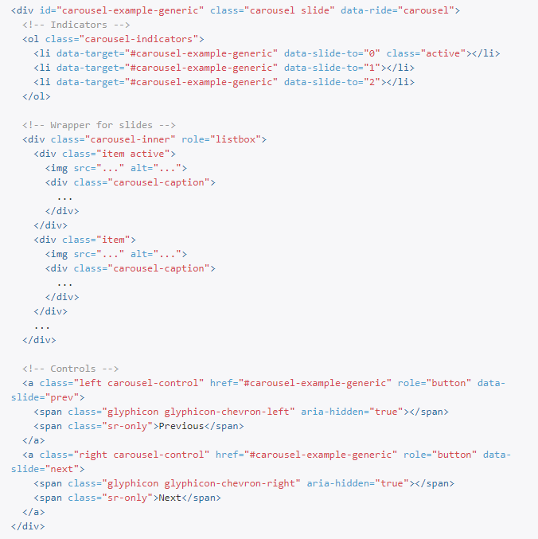

一、什么是 Bootstrap
Bootstrap 是一个前端开发框架。自定义了很多 CSS 样式和 JavaScript 插件，使用这些样式和插件可以快速做出页面。只要有 CSS 与 HTML 基础就可以使用。Bootstrap 有一个特点是响应式布局，同一个页面同时支持 PC 和移动端，浏览器兼容性也十分不错。
二、使用 Bootstrap
1、基本模板（官方文档复制）
|
2、使用官方插件
基本模板有了，怎么用呢？CRM（Copy Run Modify）,从官网复制实例到本地，运行正常就修改。做一个好看的轮播图用原生 JS 还是要花些时间，Bootstrap 官网的 JS 插件不错，复制过来
通过注释可以看出图片应该是在 Wrapper for slides 与 Controls 之间。两个结构相似的代码片段，删掉其中根据页面变化可以看出下面的结构就是放置图片的地方。添加一段代码（如下）就可以多一个图片。
<div class="item"> |
只能添加三个图片？通过删除与添加会发现下面代码片段（也就是 Indicators 部分）是控制图片数量的，与 Wrappper fo slids 是对应的。添加一个 li，就可以多添加一个 items 也就是添加图片。
<li data-target="#carousel-example-generic" data-slide-to="2"></li> |
通过复制，删除就可以轻松的使用官网的插件。
3、使用预定义样式
在Bootstrap ３官方文档中找到”全局 CSS 样式”，可以看到很 Bootstrap 预设的很多样式。以按钮为例：
<a class="btn btn-default" href="#" role="button">Link</a> |
页面中的按钮通常是以这些标签做的，默认的样式都不怎么好看。引入了 Bootstrap 后直接给这些标签添加 class 名如：btn 、btn-default之类的就会发现样式变成 Bootstrap 预定义的样式。

<!-- --> |
可以看出，Bootstrap 就是通过控制样式依靠添加或者删除类名来增加或删除预设样式。
三、Bootstrap 栅格系统
前面说到，响应式布局是 Bootstrap 的一个特色，那么怎么做到呢？Bootstrap 在页面中创建行，每一行分为 12 列（有行有列，不就可以看作是栅格吗）。可以指定元素在不同分辨率下占几列。例：
<div |
如果一行没有占满，元素会右对齐，想让它居中怎么办？用偏移。
<div |
总结
Bootstrap 是一个入门（复制粘贴）容易，不过想完全驾驭还是需要一定水平的。网上不少人认为 Bootstrap 主要用于快速制作网页，面对项目中的设计稿通常不太适合用 Bootstrap。闲时学习 Bootstrap 的设计思想和代码分类方式对前端水平提升是非常不错的。